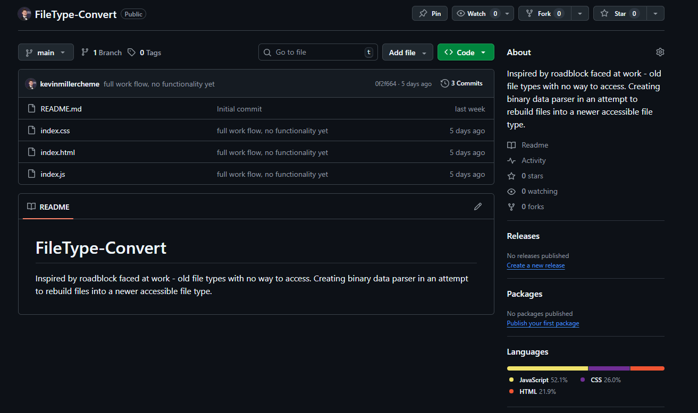
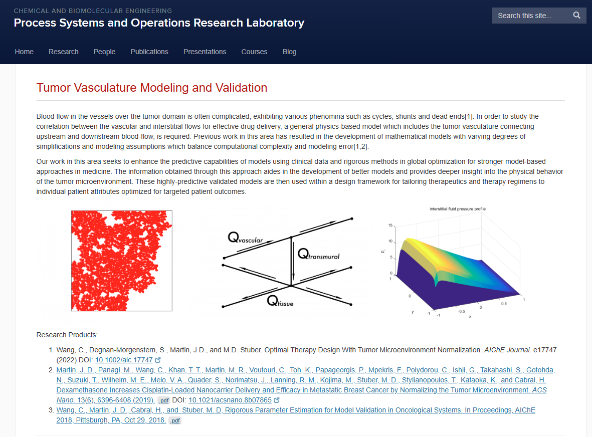

Projects
A list of projects I've worked on, ranging from college to internship to industry full-time roles
File Type Converter
In my previous role as a Process Engineer, an issue was encountered by the team that could not be solved. There existed design files from the late 1990's and early 2000's on an old computer drive that were created in AutoDesk AutoSketch. The filetype of these documents were .SKF files. AutoDesk discontinued support for AutoSketch in 2008, and completely wiped it off the internet in 2016. As such, this file type fell into obscurity as no new product carried backwards compatibility, and was confirmed by AutoDesk's helpdesk. This sparked curiosity for a project to bolster my GitHub profile and help my company recover these design files, many of which were for parts and equipment still in use in the facility. Using HTML, CSS and JavaScript and the teachings from bootcamp, a program was constructed that took an upload of a file, parsed its data and reduced it to binary structure, and reconfigured it into a new file type of the users choosing. The functionality is still being configured as more skills are learned, though the architecture is there. This has been a great low-stakes self-learning project alongside bootcamp.
Laboratory Automation - Henkel

As an intern and co-op during my chemical engineering degree, I had the opportunity to work for Henkel LOCTITE Rocky Hill in the Laboratoy Operations department, where the team was doing internal testing of all adhesives produced by the company. This was my first industry exposure to programming and where my interest turned into a career move. I joined the team primarily as a laboratory intern, and my large deliverable over the course of my internship naturally pushed me towards Python and scripting. By the end of the summer I had created a very reliable model for benchtop robot dispensing parameters based on an adhesives viscosity. This opened the door for me to stay on as a co-op while I finished my degree and finish the work I had started, and that progressed into me being the sole developer in the building, creating a few other Python automation scripts as the team was overhauling a wet lab with high-tech automation equipment. This role taught me how to operate as a software developer in industry on a team, and upon my graduation and departure knew I wanted to return to this field.
Tumor Drug Diffusion Model
During my junior year of college, I joined Dr. Matthew Stuber's Process Systems and Operations Research Laboratory as an Undergraduate Research Assistant after taking his Chemical Engineering Analysis course, a linear algebra course based in MATLAB, and enjoying it. I joined 2 other undergraduate students reviving the tumor drug diffusion project, that was dormant since the previous undergraduate who started it graduated and went on to his PhD at MIT. This project was incredibly complex, with the model being a 3-dimensional partial differential equation describing how the drug Dexamethasone diffuses into, in 3 dimensions, a solid tumor mass. We were handed a 50-page manuscript and left to our own devices as there was no graduate student working on the project. This was a great learning experience to be given realistically the most complex programming I'll encounter in my career while still an undergraduate. I spent small chunks of time understanding the project, and by the end of the semester developed a recurrent neural network (RNN) in MATLAB to replace the artificial neural network (ANN) that was in the model at the time. The desired use case for the deliverable of this project was deployment in clinics and medical settings for professionals to enter patients bloodwork readings into the program as parameters, and generating treatment dosage and other options for medical assistance. I felt, as this is one field that requires pinpoint accuracy, the replacement of the ANN with an RNN for exponential self-training made sense.